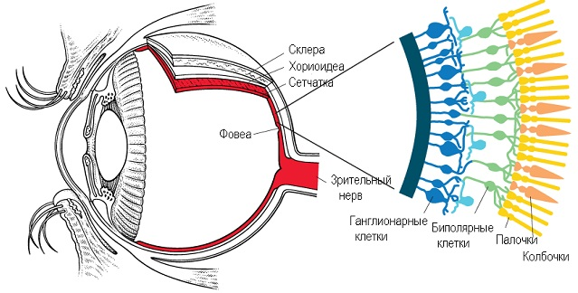
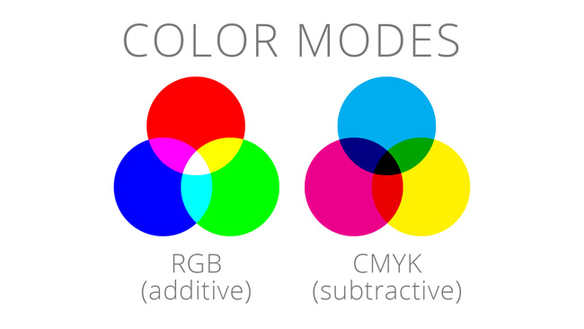

Немного теоретических сведений
Цвет
играет ключевую роль в восприятии мира человеком. Он не просто влияет на наше визуальное ощущение, но и способен формировать эмоции,
ассоциации и даже поведенческие реакции. Наука, изучающая восприятие цвета, охватывает такие дисциплины, как физиология, психология, нейробиология и культурология.
Восприятие цвета происходит благодаря светочувствительным клеткам сетчатки — колбочкам, которые различают цвета в видимом спектре. В сетчатке человека есть три типа колбочек, чувствительных к разным диапазонам длин волн: к коротким
(синим)
, средним (зелёным)
и длинным (красным)
.
Когда свет попадает на сетчатку, колбочки возбуждаются в зависимости от длины волны света, и мозг интерпретирует это возбуждение как цвет.
Однако восприятие цвета также связано с психологией и культурными особенностями. Например, красный может вызывать ощущение возбуждения, тревожности или страсти, синий ассоциируется с покоем и доверием, а зелёный вызывает чувство безопасности и умиротворения. Эти ассоциации могут варьироваться в зависимости от культурных факторов, что делает восприятие цвета ещё более многогранным. Психологическое воздействие цвета активно используется в рекламе, маркетинге и дизайне, поскольку цвета способны влиять на настроение и поведение людей.
Наука о цвете, или колориметрия, изучает способы измерения и представления цвета. Важные теоретические модели, такие как цветовые пространства RGB и CMYK, помогают описывать и управлять цветами в различных средах, например, на экранах или в печати. Цветовое пространство — это математическая модель, описывающая весь спектр цветов, которые может воспроизводить определённое устройство. Например, RGB используется для электронных дисплеев, где цвета создаются смешением красного, зелёного и синего, а CMYK — для печатных материалов, где цвета формируются наложением циана, пурпура, жёлтого и чёрного. 
Восприятие цвета — это больше, чем просто физическое ощущение. Оно оказывает психологическое влияние, формирует эстетическое восприятие и помогает передавать информацию. В медицине цветовая диагностика позволяет определять состояние здоровья по цвету кожи, ногтей или глаз, а в искусстве и дизайне цвет используется для передачи настроения и эмоционального тона произведения. В цветокоррекции, которая широко применяется в фотографии, кино и графическом дизайне, понимание восприятия цвета позволяет создать нужную атмосферу и акцентировать внимание на важных деталях изображения.
Таким образом, знание теории цвета помогает создавать изображения и видео, которые не просто красивы, но и оказывают психологическое воздействие на зрителя. Правильное использование цветокоррекции способно изменить восприятие кадра, усиливая эмоции, которые он вызывает, и делая визуальный образ более выразительным и привлекательным.